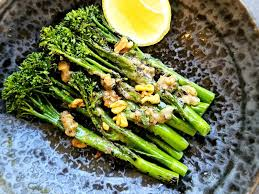

Lemon Garlic Broccolini

Description
Perfectly crisp-tender sautéed broccolini is a quick and easy side dish that pairs well with any protein
Ingredients
- 2 buches broccolini, stem ends trimmed
- 2 tablespoons olive oil
- 2 cloves garlic, sliced
- 1 dl water, or as needed
- 1/2 lemon
- salt and pepper to taste
Cooking Steps
- Rinse broccolini and pat dry.
- Heat olive oil in a large skillet over medium-high heat. Saute broccolini for 3 to 4 minutes, turning occasionally, until broccolini begins turning a bright green color and edges are starting to brown. Add garlic slices and stir until fragrant, about 30 seconds. Pour in water, cover with a lid and reduce heat to medium-low. Steam broccolini until crisp-tender and water has evaporated, 3 to 4 more minutes. If you prefer more tender broccolini, add in a bit more water, cover, and cook for a few more minutes
- Squeeze lemon over broccolini and season with salt to taste.